Written 2026-06-04
Article under construction — hard hats on
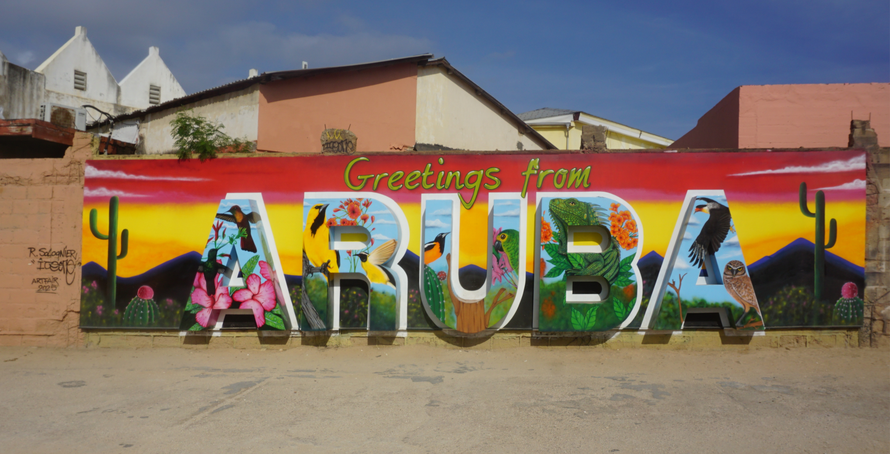
A couple of quick notes first.
Since I was young, I've always heard my parents talk about their outstanding study abroad experiences in college. My mom studied 6 months in Argentina, and participated in an advocacy trip to El Salvador. My dad went abroad for 6 months in Senegal, moving between the capital city of Dakar and rural villages. Both of these trips profoundly changed my parents' views on the world, and they highly recommended me to study abroad during my time in university.
While my parents were both liberal arts majors, I'm studying electrical and computer engineering. This means that I have less freedom in my schedule, and it's trickier to take time away. I have 6 years of formal Spanish education with emphasis on conversation, and I would love to have a proper language immersion opportunity at some point in my life, but that time is not university courses; electrical engineering is plenty hard enough in English.
When speaking with my academic advisor, I mentioned my desire to go abroad, along with some of the challenges I felt that would entail. She forwarded several opportunities abroad, and a trip to the small island nation of Aruba focusing on sustainability caught my eye. The experience lasted a week and a half over spring break, meaning I wouldn't need to miss a term of my fast-paced engineering coursework. After properly overthinking my options, I went for it! I got accepted into the program, and bought plane tickets for spring break.
In the time leading up to the trip, I discovered that by crazy coincidence my roommate Tommy also applied and got accepted to the same abroad program to Aruba! I caught a ride with Tommy up to the Portland airport, where he dropped me off. My first stop was an overnight layover in Houston.
To avoid several airport-meal sized dents in my wallet, I brought with me a build-a-burger kit with three homemade black bean patties, toppings, condiments, and even pre-toasted buns. While I thought this was a brilliant idea, my TSA agent was less enthused. After showing my fry sauce wasn't a bomb, I rushed through the airport, had my first burger, then boarded my flight to Houston.
I arrived without incident. I wasn't sure ahead of time what transportation would be available to get from the airport to a hotel, so I had decided to wing it. After an hour completely lost, I found helpful airport employees that directed me to a bus. The first hotel I found was full, but the second was able to accommodate my spontaneous request. Another burger later, I started my first diary entry for the trip, upon which this article is based.
As always, I found the hotel bed provided a lack of quality sleep. A 2 a.m. trip to crank the air conditioning as low as it would go helped the second half of my abridged 5 hour night go slightly smoother. Coming from relatively cool Oregon, I was already roasting in Texas, so I started to worry about what temperatures in Aruba might do to me.
I heard that TSA lines were a disaster amid record call-out rates due to another government shutdown, so I showed up to the airport with 4 hours before my flight. Good thing I did, because it took 2 and a half hours just to get through the line. Once on board the plane to Aruba, everything was perfectly uneventful. My final burger carried me through until we landed.
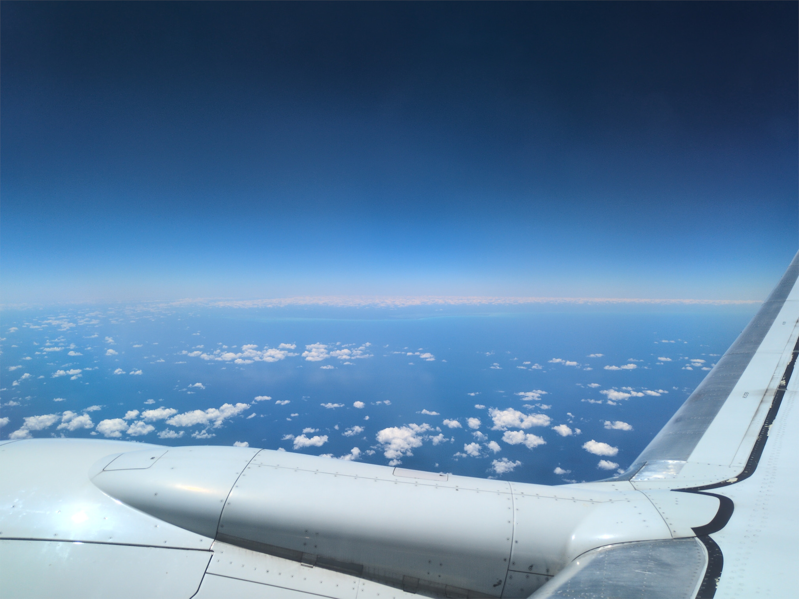
I was the last student to arrive. I got picked up by one of our two instructors, Dr. Dwaine Plaza. He loaded my bags into the van, then drove to meet up with the rest of the group at a grocery store to buy foods for DIY breakfasts. There aren't stoplights in Aruba; instead each major intersection has a roundabout. I was informed by Dr. Plaza that every time you enter a roundabout you have to look to your left.
At the store, I found Tommy and met our roommate John that we would be staying with in the 3-bed apartments. We picked up supplies, dropped off food at the apartments, then concluded the first night with a sunset dip in the ocean and viewing an historic lighthouse.
It slipped out that Tommy was turning 21 on Monday, so naturally a few of our newest friends got started planning a group night out. I was just getting started chatting with people, but I could already tell we had a great group.
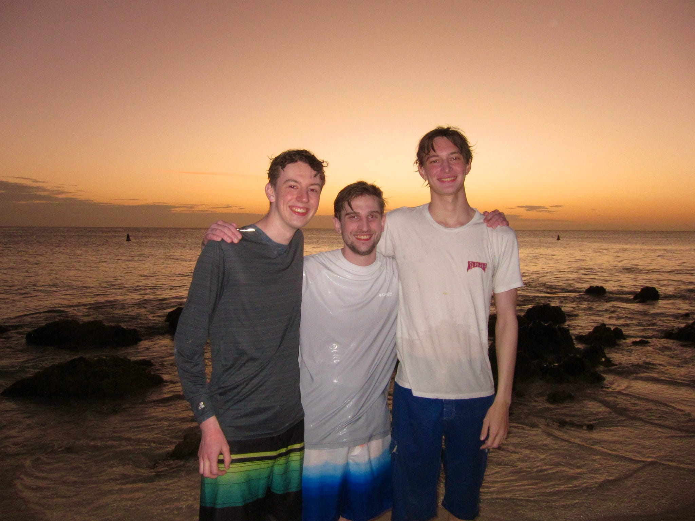
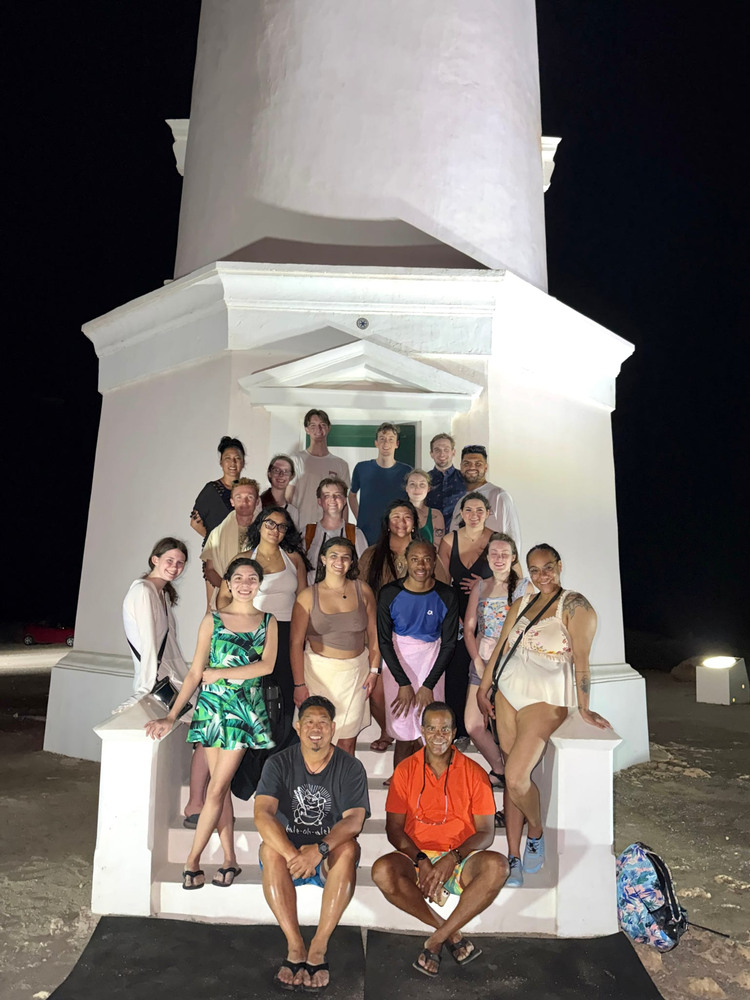
Fortunately, our room in Aruba had much better air conditioning than the hotel room in Houston, and I was able to get a good night of sleep. Little did I know how precious a resource sleep was about to become over the next week.
The first proper activity of the morning was small group icebreaker questions, and I got to chat with Rene and Taylor H.
Our first lecture of many came from Dr. Tatiana Becker of the University of Aruba. In a patio outside of the apartments, we learned about the importance of sea grasses (not to be confused with algae) to Aruba's coastal ecosystems. The three cornerstones of the coastal ecosystem are coral reefs, mangroves and sea grasses. While coral reefs and mangroves are at the forefront of the conservation movement, the less-exciting sea grass gets left behind. Sea grasses provide valuable ecosystem services such as erosion prevention, sequestration of carbon dioxide and chemicals (protecting reefs!), habitat, and food for both sea turtles and the parrotfish that produces Aruba's characteristic white sand. Without this knowledge, sea grasses are routinely ripped out to present smooth, manicured beaches.
Lunch was Peruvian, and it happened that my vegetarian diet didn't agree much with the massive list of meat-based entrées. At home I do all my own cooking, and even when I got out the restaurants in the PNW are quite accommodating, so this was a rare time I struggled to find food to eat. I have many more thoughts on the flexibility of vegetarianism within other cultures, and while I'm not as strict as my be expected, that thought is probably best left for a later article or personal conversation. Fortunately, I wasn't yet out of luck, and a side of potato and onion and a second side of fried yuca. The latter of those is a dish I really enjoyed, and hope to recreate at home in the future.
After lunch, we reconvened with Dr. Becker to collect field data on sea grass growth. I was the last to find a group, so I was given the important role of holding a stake in the sand that controlled distance measurements. The role was so important, in fact, that I was dubbed the "Sea Grass Queen."
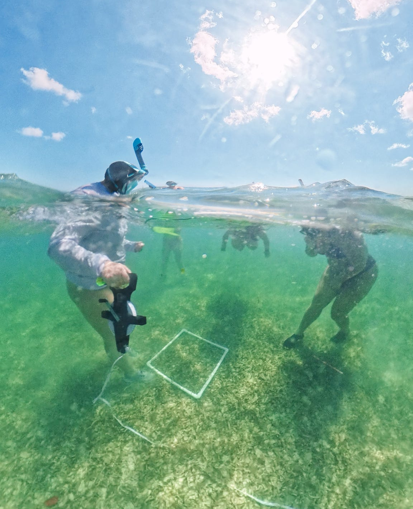
Back at the apartments, we received a lecture from Nichole Danser on coral reefs. Danser founded NGO ScubbleBubbles, an organization dedicated to restoring dying reefs along Aruba's coastline. Like sea grasses, corals provide valuable ecosystem services, yet experience existential threats. Bleaching of corals is caused by both sea temperature rise due to climate change causes as well as harmful chemicals from sunscreens. PSA: Next time you are at a coral reef, make sure to buy reef-safe sunscreen to avoid damage to the corals.
Onto lecture number 3. We loaded into the vans and drove to Boca Catalina, where we met Dr. Eric Mijts, professor of linguistics and sustainability at the University of Aruba. He opened by apologizing to engineers, saying he doesn't like the word "solutions," that any option to address the world's challenges always has trade-offs. Through my engineering curriculum I'm quite familiar with trade offs, but it was very interesting to hear Dr. Mijts' perspective that limitations need to be discussed more.
Dr. Mijts pivoted to labor. Upwards of 90% of Aruba's economy is tourism, and it has a profound impact on the people of the island. At any given time, approximately 25k tourists are present on Aruba, an island of only 120k residents. Of these, there are 100k positions that need to be filled in tourism alone, meaning many work multiple jobs to make ends meet.
A particularly fascinating point from the talk was that locals by necessity are conscious of sustainability due to the small size of the island and the desire to keep it clean for tourists. The visitors, on the other hand, in general do not think about sustainability, since they won't feel any impact once they return home from their short vacation.
We finished the night by snorkelling in bay of Boca Catalina. I hadn't snorkeled before, so I took this great opportunity to fill my eyes with stinging salt water every few minutes. I wasn't used to breathing with a snorkel either, and I maintained fairly constant hyperventilation, which certainly didn't help. I got frustrated enough that I stepped out to take a walk along the beach. When I got back, Tommy figured out that every time I smiled or laughed, the creases of my face would break the seal. I was able to hold back smiles, but tricking my brain to relax my breathing proved more difficult.
Once I figured out how to avoid filling my goggles with salt water, I was able to join the group in observing marine life up close. Unfortunately, the coral in the bay, once prolific, had experienced damage from cutting and bleaching, resulting in a dying habitat. Still, we were able to see many different species of colorful fish, and even a sea turtle.
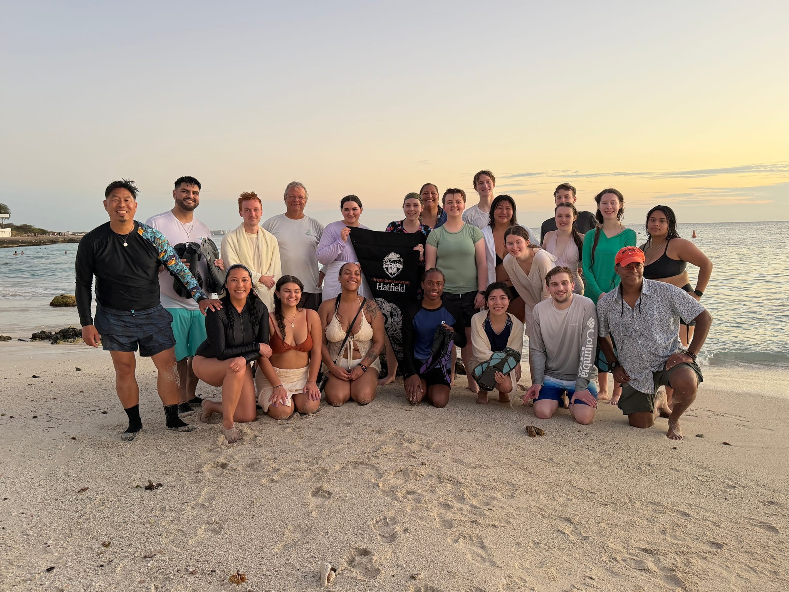
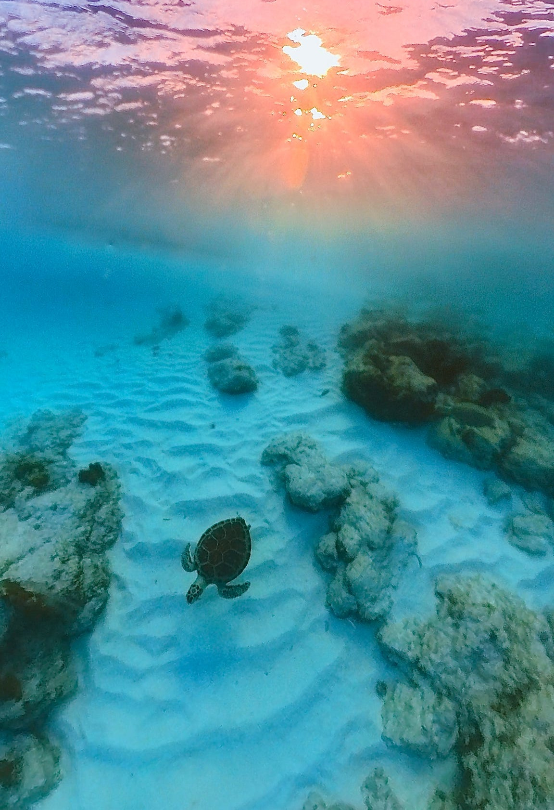
The day started with a history lesson from Mr. Leon Bérénos, a born and raised Aruban and an educator with the department of tourism. Mr. Bérénos is also colloquially known as Aruba's best dressed man; in just a tee shirt I didn't buy it yet, but it would become apparent later.
Mr. Bérénos largely focused on the economic evolution of Aruba. When the first European explorer Olonzo de Ojeda landed on the island in 1499, he named it "isla inutil", or "useless island" due to an apparent lack of natural resources. Industry kicked off on Aruba when gold was found in 1824, causing a gold rush similar to what the American west experienced. Later in the century, aloe and phosphate emerged as successful commercial ventures. As gold and phosphate died out at the start of the twentieth century, crude oil refinement got its start, a dominating industry that revolutionized life on Aruba. In the 1960s, the island pivoted to tourism for its main source of revenue, capitalizing on the natural beauty the island offered.
Next, Mr. Bérénos led a walking tour of downtown Oranjestad, Aruba's capital city. He discussed the history of Dutch colonialism, clearly visible in the city's architecture.
After the tour, we attended the National Archaeological Museum. This supplemented Mr. Bérénos' history presentation, particularly focusing on the island prior to colonization. Most interesting to me were anthropomorphic vases and "microbeads," emphasizing a passion for craft and artistry among the indigenous inhabitants of Aruba.
A presentation by the museum director revealed the first hint that our packed schedule was beginning to catch up with people. Looking around the dimly lit room, several folks took the time sitting down to catch up on some needed rest. Some hid it better than others. I was able to push through, but passed out immediately during our quick break back at the apartments.
The aloe factory was next on the agenda. It was interesting to see how such an important crop to the island was cultivated and processed. I found that the tour however felt rather fake and tourist-oriented, but that of course makes sense given their typical audience.
A brief aside here regarding being a tourist. I grew up in Ashland, Oregon, a town with heavy dependence on tourism. My Grandma to this day counts California license plates during her walks in the park, complaining if the number is too high for her liking. I've had a general distaste for tourist-y activities while travelling, instead trying to get more meaningful engagement with the local area and community. Still, my perception of the way in which the aloe factory tour was presented was perhaps an overreaction. It does sound like they do pretty cool things, even donating to sustainability-focused organizations such as ScubbleBubbles. The aspect of being a tourist, while simultaneously learning about the severe (negative) impacts of tourism in Aruba, is something I struggled with throughout the trip. Feelings over, moving on.
Right after the aloe factory tour, we did one of the least tourist-y things of the whole program. Working with Anita Mijts-Aerts and her grassroots initiative Ban Lanta y Planta (translated from Papiamento as "let's get up and plant"), we grouped up and planted native trees in a nature preserve. The dirt was really hard and I quickly worked up a sweat. As Dr. Plaza pointed out, there's a reason most cemeteries in Aruba feature above-ground burials.
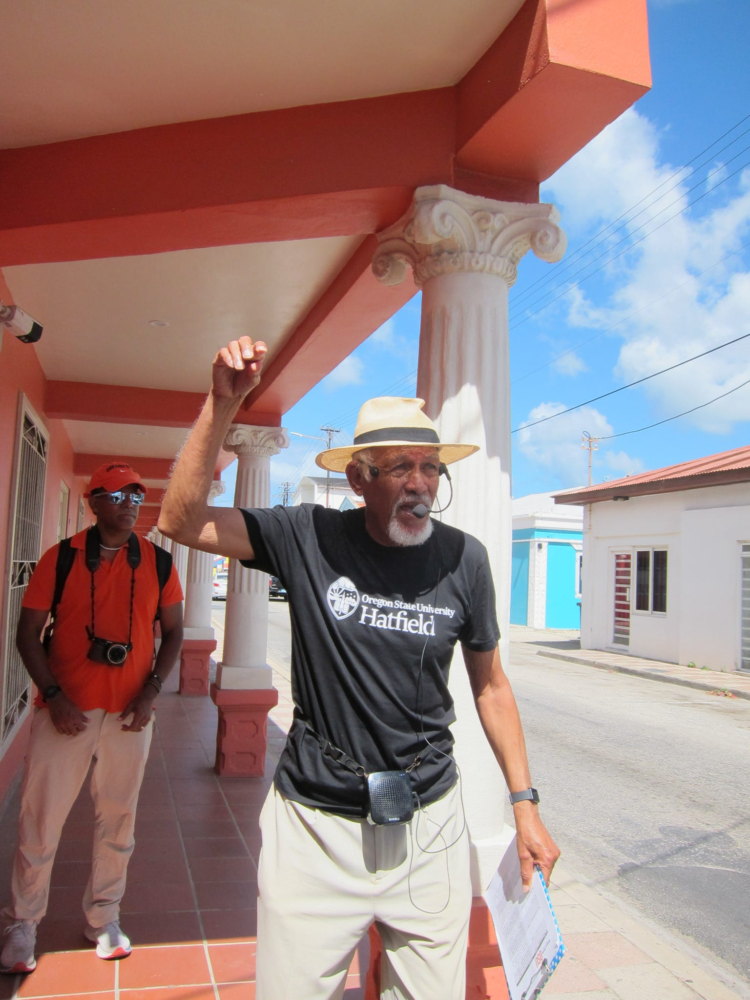
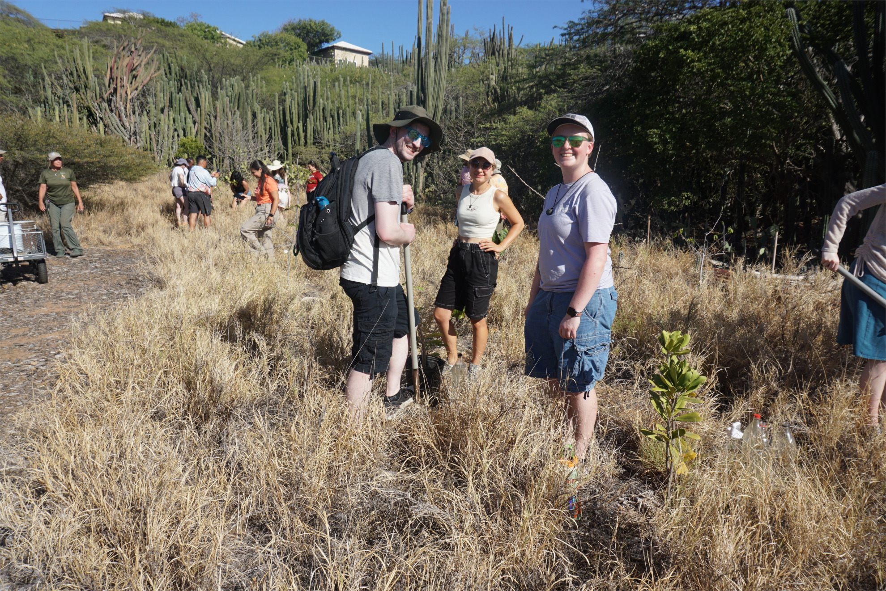
We had a barbeque dinner back at the apartments and hosted students from the University of Aruba. It was super cool to mingle with them and hear their experiences in Aruba and back home in the Netherlands. Professor Cheung got Tommy a birthday cake with Aruba's flag, which was a very nice touch to the evening.
Tommy tried to slink off to bed, but I had to remind him that he was turning 21 in Aruba so that wasn't an option. He thankfully seemed to see some reason and decided not to ruin the group's plans of going out to celebrate him. Mr. Bérénos' son Gillian proved to be the expert on Aruba's night life, and led us to a bustling strip of bars with crazy lights and loud music from all directions. It was a worthy celebration and lots of fun bonding with everyone outside the classroom setting. The only downside was that we were all still tired, and an 8 a.m. start the next day wasn't getting any later.
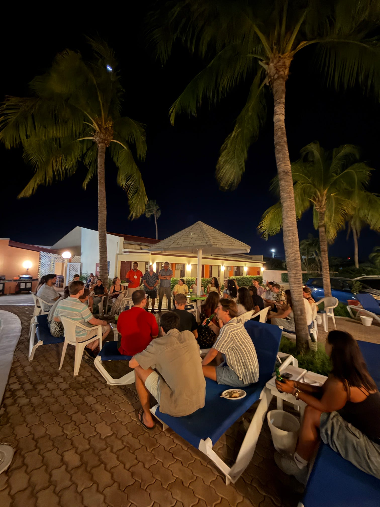
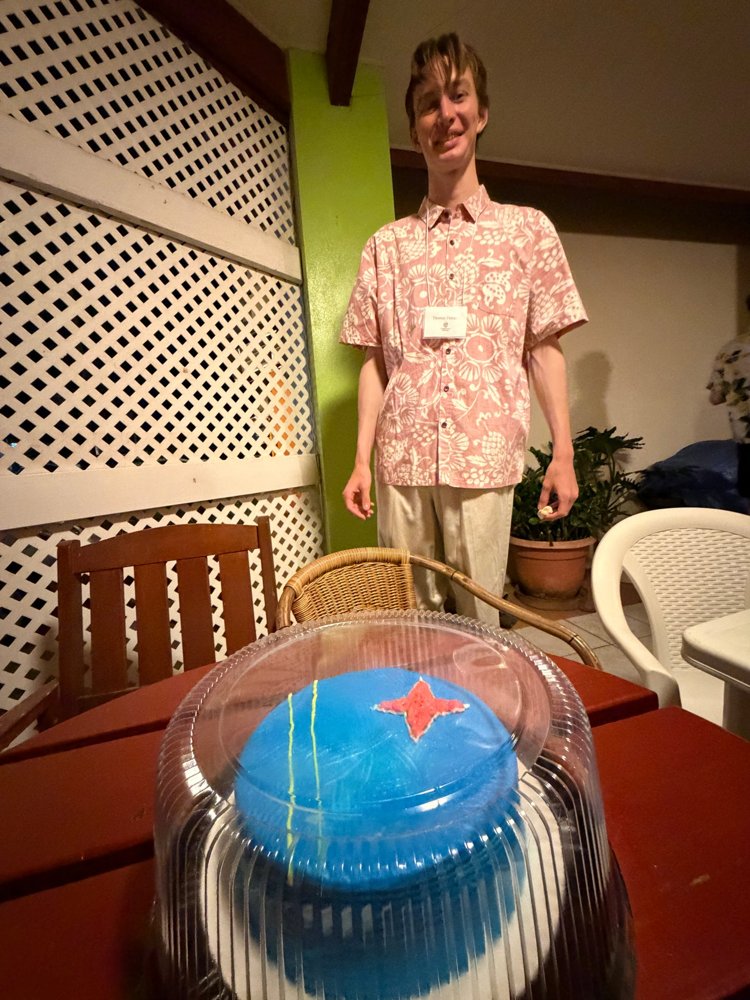
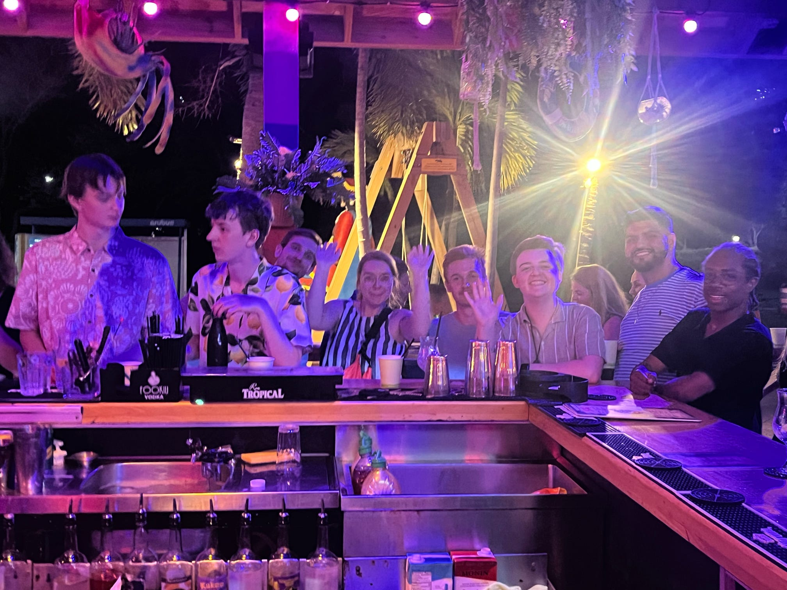
As predicted, it was slow moving getting started bright and early after our late night. I could definitely feel the impact of 5 hours of sleep.
Our morning began with a walking tour given by John Wardlaw, professor of tourism and hospitality at the University of Aruba. We walked the entire row of luxury hotels crammed along Palm Beach on the northwest coast of the island, 3.5 km of resort after resort. Prior to this event, we had discussed some of the negative impacts of tourism industry, particularly on the environment. Professor Wardlaw revealed that these issues were not so black and white, exposing lots of intricate detail of the hospitality industry. Particularly, he explored idea of tourism from the perspective of a resort. He posed difficult questions to the group, probing for where the line should be drawn between short-term economic prosperity and long-term sustainability, and arguing that both are important.
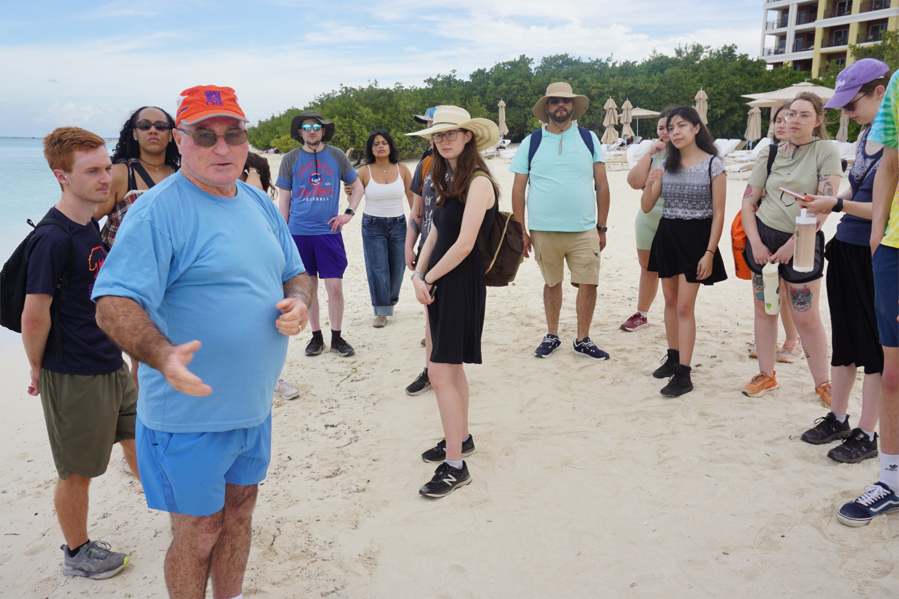
Next, we attended a lecture from Sietske var der Wal, leader of volunteer organization TortugAruba. Her team aims to protect the four species of sea turtles in Aruba, all of which are threatened by continued development on the island. Boat propellers can rip open shells, plastic sea trash can tangle fins and beaks, and the increasingly popular beach ATVs are uniquely good at crushing nests (this is just one of many reasons beach ATVs are a bad idea). Since only 1 in 1000 hatchlings will survive to adulthood, it is vital to protect these grown turtles. However, the most pressing issue that sea turtles face is artificial lighting. When hatching at night, baby sea turtles crawl towards the ocean illuminated by moonlight and away from the dark inland. Now, with light pollution everywhere, turtle hatchlings instead crawl inland, never making it to the ocean. The big takeaway from this lecture is to minimize the impact of lighting by using shielding to direct light only where it is intended. In addition to turtles, reducing light pollution benefits all wildlife.
We heard again from Professor Wardlaw, this time in a classroom setting. Space on the small island is at an extreme premium, and he argued that all will be filled unless prevented by regulation. He traced the flow of tourists onto the island, identifying around 33k tourists present per day, each with a typical 6.8 night stay. This causes a 25% population influx in population, and requires strong infrastructure in place to support. The island has changed to accommodate visitors, altering the culture of Aruba in the process. For example, development of American fast food chains followed the tourism boom, which in turn affected the eating habits of the locals.
Lecture number 3 was from Bucuti & Tara Resort, a long-standing hotel on the island. Their claim to fame is pushing back against the idea that luxury tourism and sustainability are mutually exclusive. Bucuti & Tara is the only hotel in the Caribbean to be certified carbon neutral, and in addition scored 100% on the green globe test. It was very cool to see circular practices in use, such as donation of food scraps to chickens at local farms, reuse of gray water, and energy generation through gym exercise equipment. Low-flow faucets and energy-efficient temperature control are used to reduce power and water usage. The presenter acknowledged that the sustainability practices they implement have high upfront costs, but the return on investment pays off in the long run, so they make sure to do things right the first time. The resort also is connected to the local community. They feature art from local artisans, sponsor a gardening class at a local school, and even dedicated the land we planted trees on the day before as a nature preserve. Now don't get me wrong, this isn't an advertisement for them. With the amount of money they have, I'm naturally skeptical of their information, intentions, and green-washing PR gymnastics. While I don't buy everything, it sounds like they're putting in far more effort than any other hotel on the island, so I think there is a case for optimism here.
Our final activity for the day was a lecture on mangrove ecosystems and how the early gold mining industry impacted them. We met up with Dr. Mijts at the site of an abandoned gold mine to see lasting effects firsthand. Mangroves provide a buffer along bodies of water, absorbing pollution and protecting the rest of the ecosystem. These unique trees with underwater exposed roots provide very important habitat for many different fish and animals
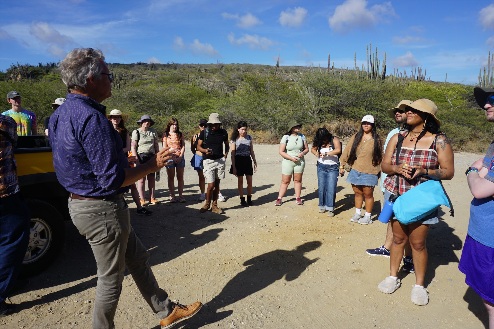
The site Dr. Mijts chose also happened to contain one of only around 200 remaining nests for the shoco burrowing owl found only on Aruba. We were incredibly fortunate and were able to see a healthy pair of shoco. Finn and Taylor G., both biologists and bird watchers, were very excited at this rare opportunity.
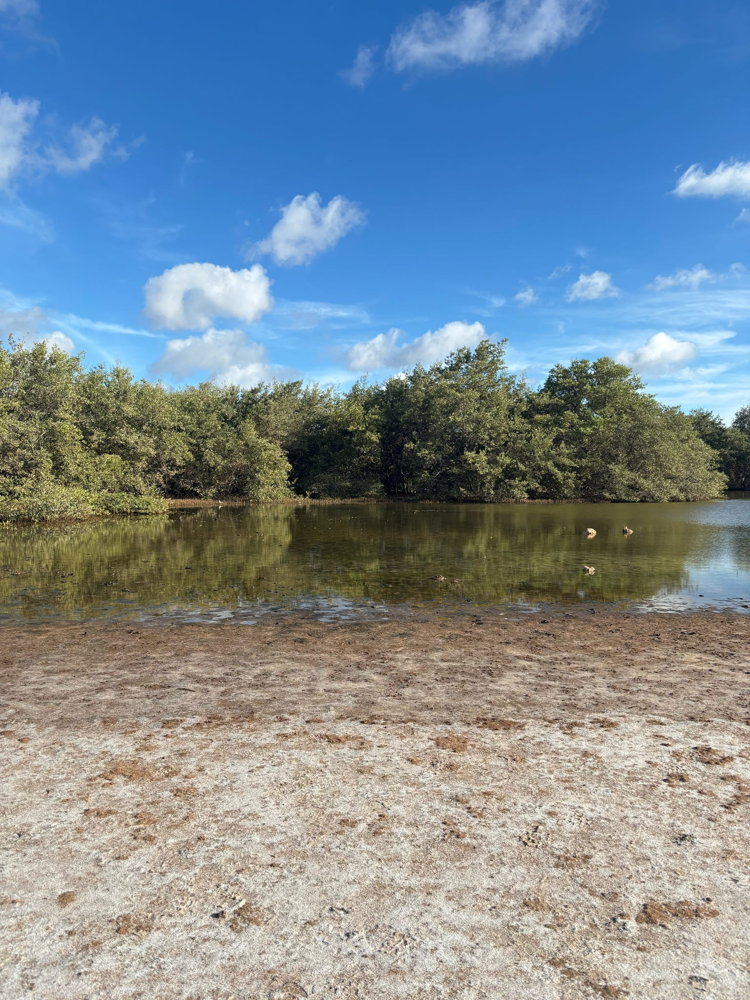
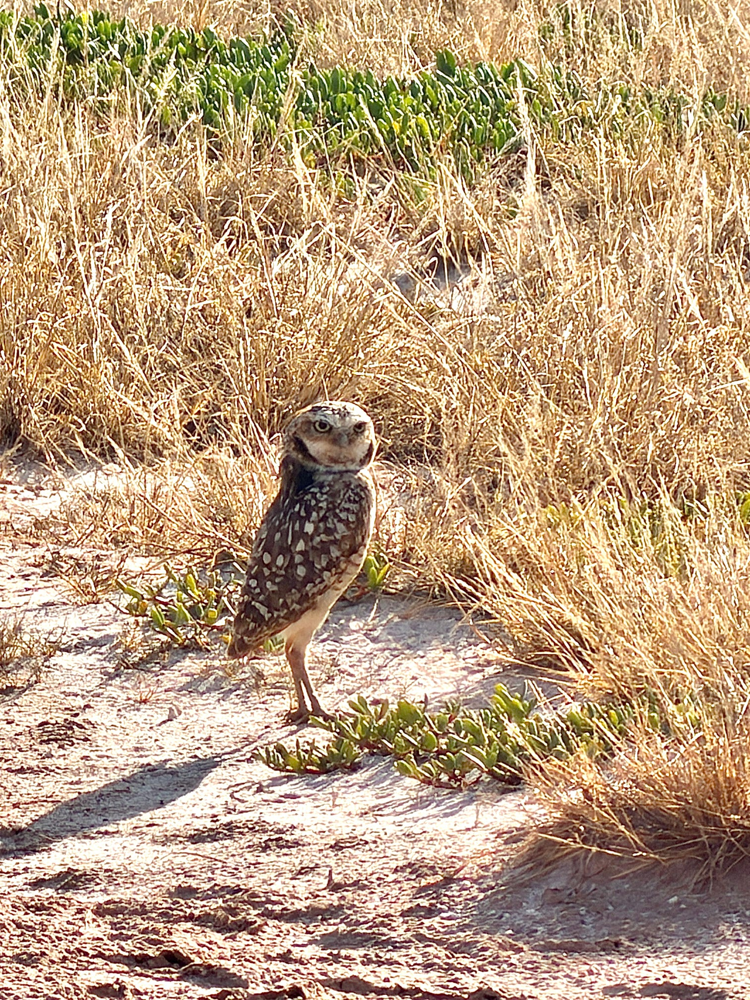
At the grocery store supply run, a group of us decided to load up on new fruits that aren't available to us back in the states. I grabbed a granadilla (a relative of passionfruit), guava, and a couple borojó (national fruit of Colombia). The granadilla was an outstanding choice, with a flavor very similar to a passionfuit but sweeter. The guava was alright, but the flesh was much drier than I was expecting. The borojó was the most novel of the three, and its flavor was an interesting combination of sweet, sour, and bitter. I honestly didn't mind it, but just about everyone else on the trip who tried it thought it was disgusting.
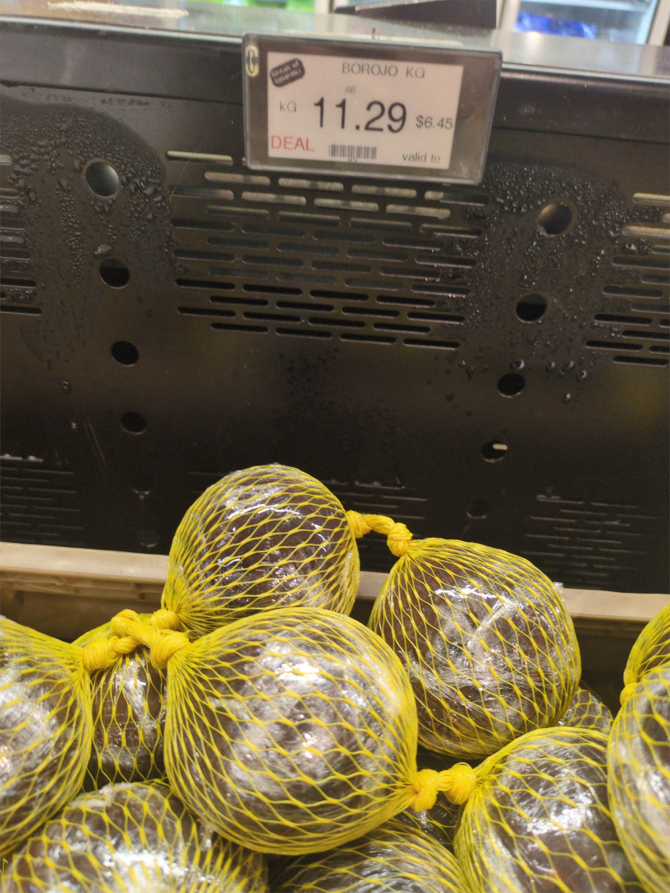
We finally had an early return to the apartments, and the timing couldn't have been better. With a short night previously and a full day, our group was worn out. I took full advantage and caught up on much needed sleep.
Wednesday morning started with a presentation from Christine Leo, Sustainability and Health Manager of the Aruba Airport Authority. The small airport handles a huge number of tourists, prompting an ongoing upgrade to decrease wait times. For this upgrade, the airport implemented a strategy shit towards more sustainable practices. The main focus here was implementation of safety regulations and working with contractors not used to sustainable construction.
We then moved to the Aruba Port Authority to learn about the impact of cruise ships. I was most interested by the waste management aspect of the ships. One source told us that ships unload waste on Aruba (a small island with limited ability to handle large quantities of waste), whereas another source told us that no waste is left here. There seems to be a lack of transparency about what actually goes on.
Being an electrical engineer, the next stop was my favorite yet. Our group toured a warehouse of a grassroots plastic recycling organization called Plastic Beach Party. Tony gave our group a tour of the shop, detailing the recycling process from collection of residential plastics, shredding into flakes, heating, and extruding into molds or pressing large sheets. Their facility built their own machinery from scratch using the open source models provided by the international Precious Plastic organization. This aspect of the project was super inspiring to me, that my knowledge from school could be applied to build awesome machines like theirs that could have a positive impact on the surrounding community.
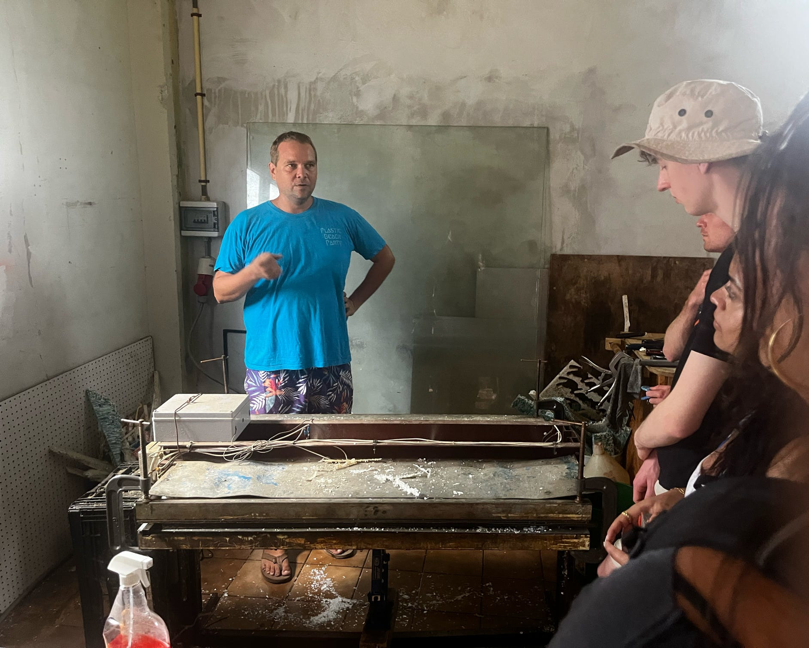
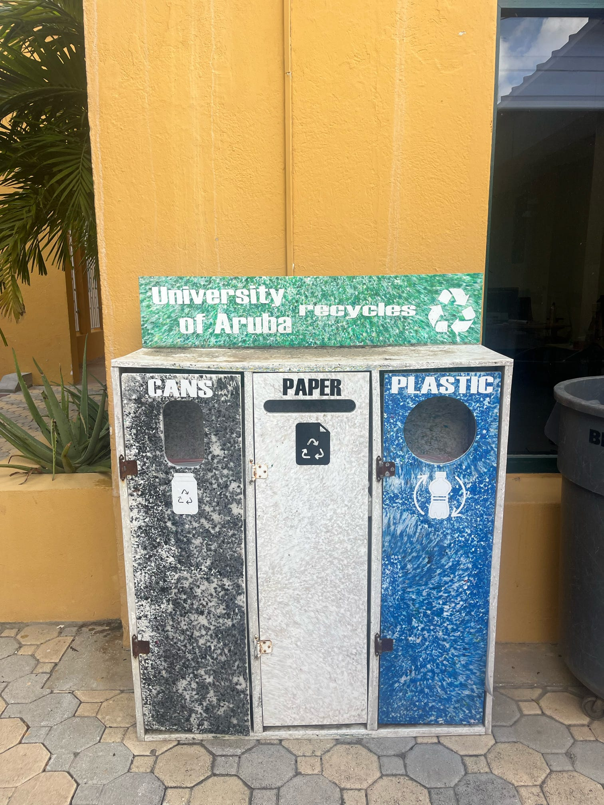
Our last lecture of the day was given by Dae Hereira. One of the primary focuses was the struggle of waste management on a small island. The current wastewater treatment plant was designed in the 1970s and received an upgrade in the 1990s, yet exceeded capacity in 2002. By 2017, the island overwhelmed the plant with 3 times the available capacity, and overflows resulted in excessive nutrient runoff. The surge was largely due to an increase in tourists, yet the cost of the treatment plant is fully fronted by the Aruban government while hotels and resorts don't pay a dime. Since the producers of waste are detached from the costs of processing the waste, economic incentives to improve the situation aren't present, causing problems like this to persist.
Following the lecture, we drove out to the site of the wastewater treatment plant to see the damage firsthand. Behind the plant, the overflow of wastewater has produced an unnatural area of high nutrient concentration.
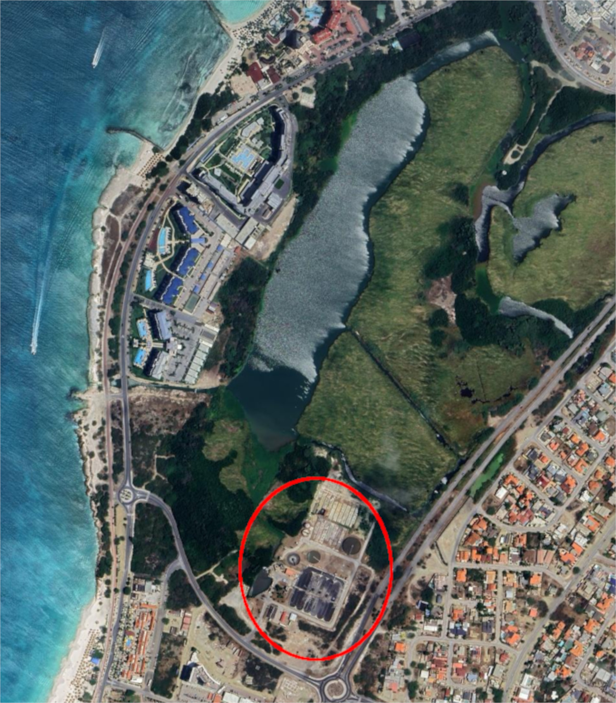
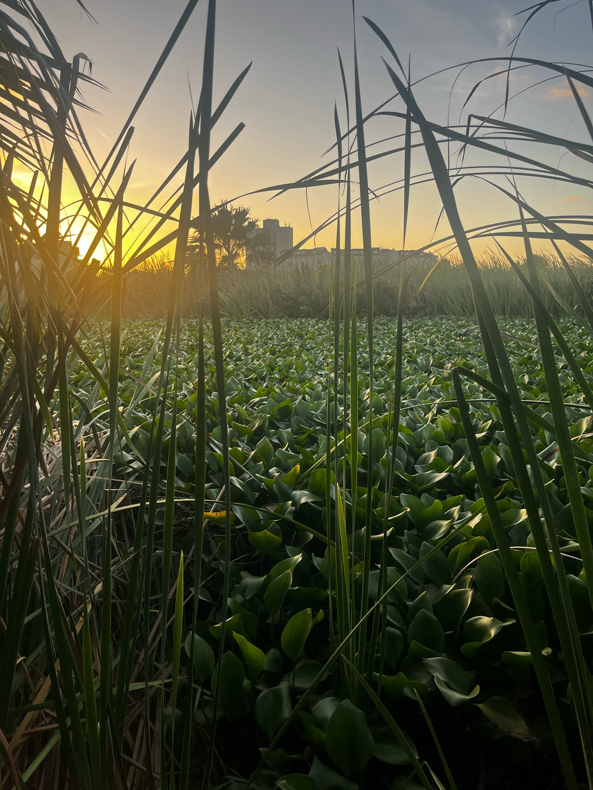
We finished the day off with a pre-birthday dinner for Professor Cheung at a local Chinese restaurant. I had the opportunity to sit next to Dr. Eric Mijts at dinner. Dr. Mijts was both exceptionally kind and knowledgeable, and provided answers to several questions I had. I had heard it mentioned that WEB Aruba NV, Aruba's water and energy distributor, had banned gutters on buildings, preventing citizens from collecting their own fresh water and instead furthering their monopoly. I asked Eric about this, and the insight he provided is what pushed me to select this topic of water access for my research paper. Once the paper is finished I'll link it here. After dinner, we got our goodbyes in with Eric and Anita, both of whom were leaving for Belgium the following day.
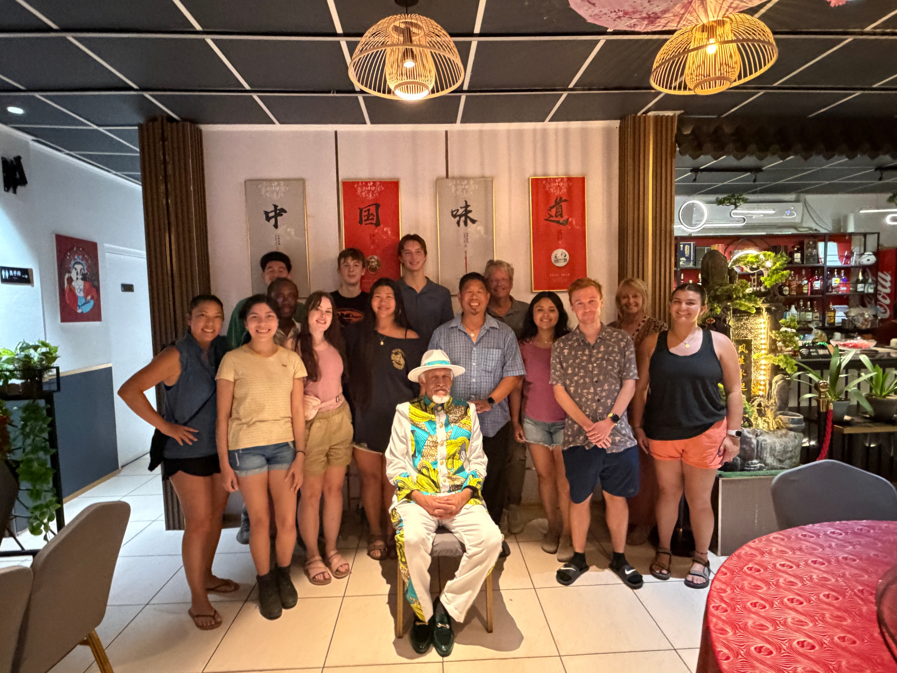
Our first stop of the day was the Arikok National Park, a preserved natural area on the east side of Aruba occupying nearly 20% of the island by area. This was our first early morning of the trip, with a 6:30 a.m. departure from the apartments. We had a decent hike ahead of us, and the goal was to get out before the temperature became too unbearable.
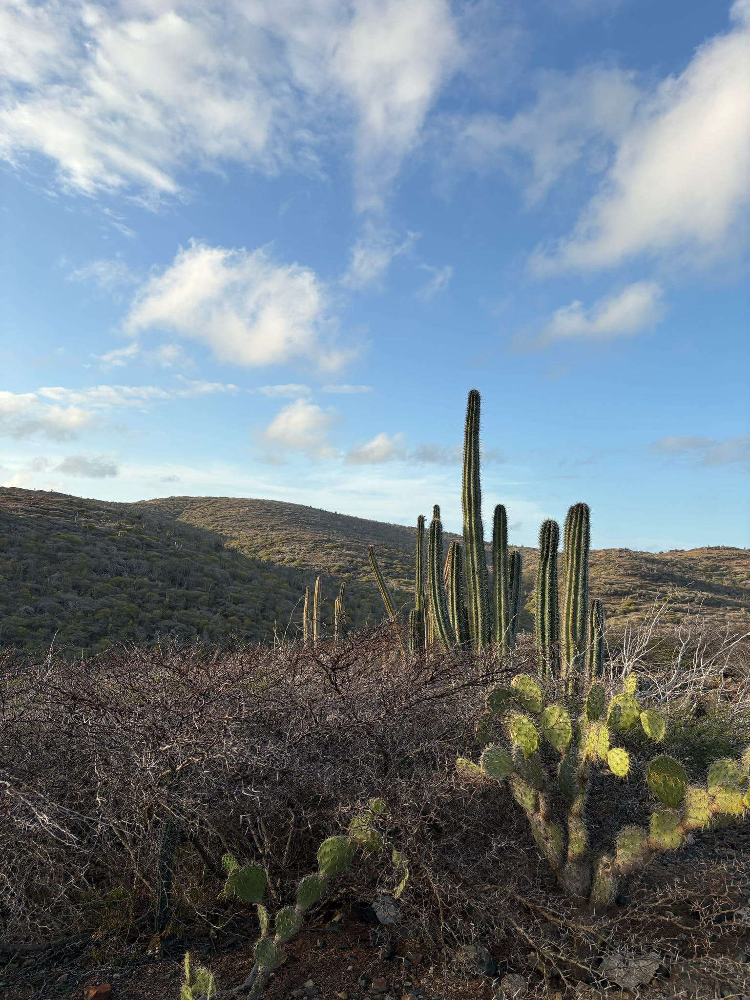
The undeveloped natural environment was beautiful. After seeing so much unnatural development on the island, it was great to spend a morning surrounded by cacti, rocks, and fofoti trees. With us, we brought trash bags to collect any plastic along the path. Unfortunately, our group filled 5 bags with plastic by the time we arrived at our first destination. At the Conchi natural pools, we paused for a beautiful swim. Despite being such a small area, the pools contained an incredible amount of colorful fish and coral growth. As instructed by Dae, our group went the morning without sunscreen, deodorant, or makeup to avoid introducing any unnecessary chemicals into this pristine environment.
We then hiked over to a nearby beach that TortugAruba identified as heavily contaminated with plastics. Right they were, because nearly everywhere we looked we were able to see tons of brightly colored scraps. It didn't take long to fill our bags, only around 15 minutes. I was amazed at how large of an impact we were able to have in such a short time. With many hands and light work, the beach looked so much better with 11 bags of plastic missing from its shore. This was really motivating to see.
We trekked several kilometers back to the vans, although this time carrying full trash bags, moving uphill, and with the sun making its presence known. I was sweaty and hot by the time we got back, but I felt amazing.
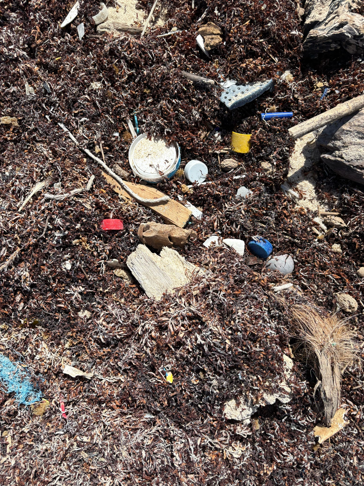
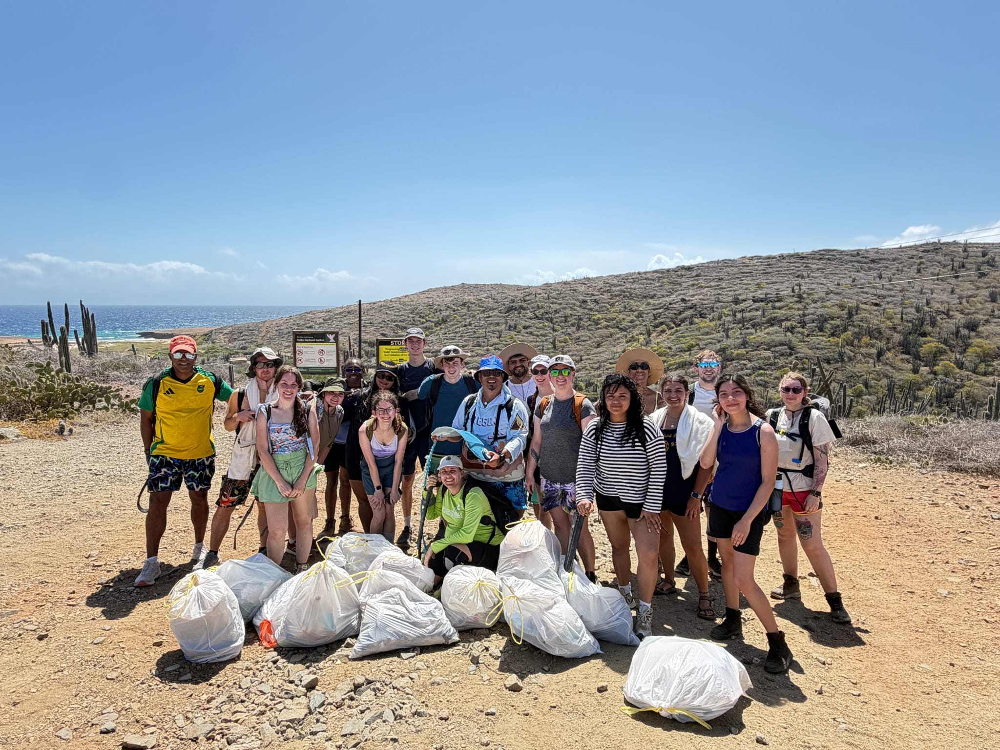
Our group then made our first visit to San Nicolas at the southern end of the island. We toured the Museum of Industry, which covered lots of content similar to what had been discussed in talks by Mr. Bérénos, but this time from the perspective of the corporations and their employees.
Dinner was Trinidadian, and Professor Plaza recommended a dish called "roti." I ordered pumpkin roti and it was incredible. This is another item I'll have to append to my ever-growing recipe to-do list. For a proper birthday celebration, Professor Cheung received a card from our group, and recital of 'Happy birthday' with help from the restaurant staff.
Over the past couple days, some of us had been thinking about souvenirs. I find myself allergic to the cheap landfill plastic typically sold to tourists, so I decided on national currency and postcards for good memories. Ari shared my opinions, so once we got back to the apartments, the two of us walked to a nearby convenience market to exchange currency from US dollars to Auban florin.
We tried to replenish stock of electrolyte power before another hike the following day, but the store assistant we approached spoke only Spanish. I have six years of formal Spanish education with emphasis on conversation, but 'electrolyte power' had me stumped. I was trying for formulate some idea along the lines of "como arena dulce que se puse en la agua para no tener calor" (literally: sweet sand you put in water to not get hot), but Ari was steps ahead of me with Google Translate. Even though I didn't get my chance to have an exchange with a native Spanish speaker, this event had me thinking more about Spanish, which would prove very helpful the following night.
As we checked out, the cashier was incredibly efficient, handing us the minimum amount of change necessary. We felt bad asking her to keep breaking our change up, but after three rounds back and forth we were satisfied. The florin notes are beautiful, and the 10 florin note prominently featuring a sea turtle immediately reminded me of my grandma who collects all things turtle related. I kept a note for myself as well as the coins, but I mailed a second note to my grandma as soon as I got back. She was very appreciative and has it up on her wall.
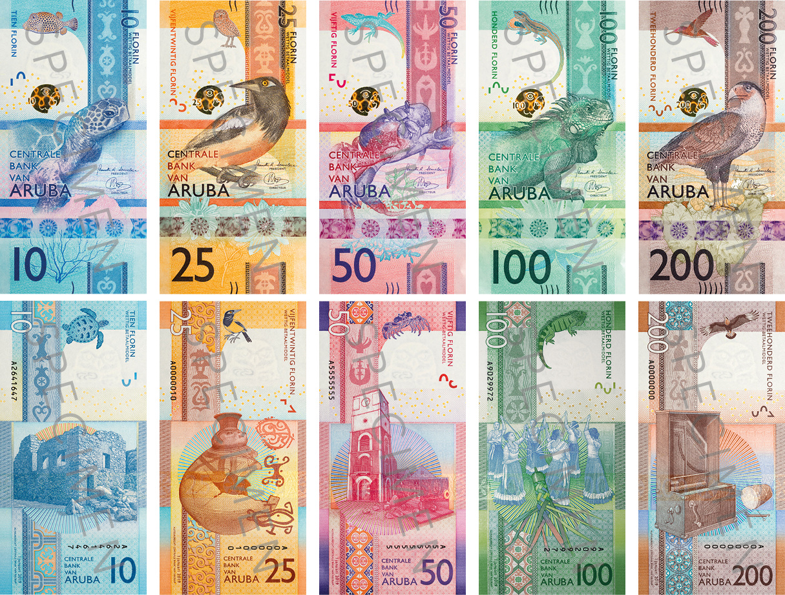
This morning was another early one at 6:30 a.m. again. We went back to Arikok National Park for another hike, this time a longer trek of around 9 km. Along the trail, plants shed many sharp thorns which easily pierced the soles of shoes. I was the first to get impaled on the hike, but fortunately Dae brought several pairs of pliers to dislodge these thorns. It was careful walking from then on.
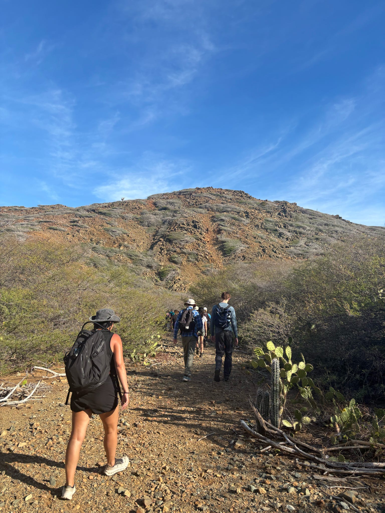
We stopped at Fontein Cave. Our first impression was the crowd of goats atop the cave as well as within nooks along the face of the wall. If our hike outside was hot, it was nothing compared to the sauna inside the cave. Just being inside the cave I must have sweat out all the water I drank that morning. Inside, we saw indigenous drawings on the cave walls from thousands of years ago.
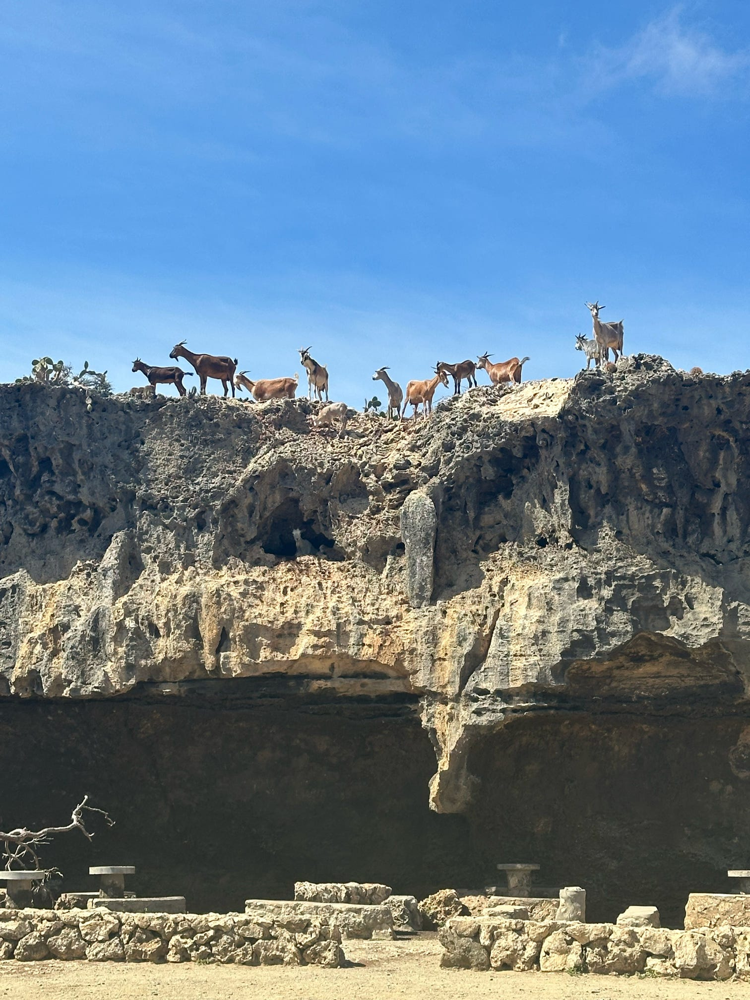
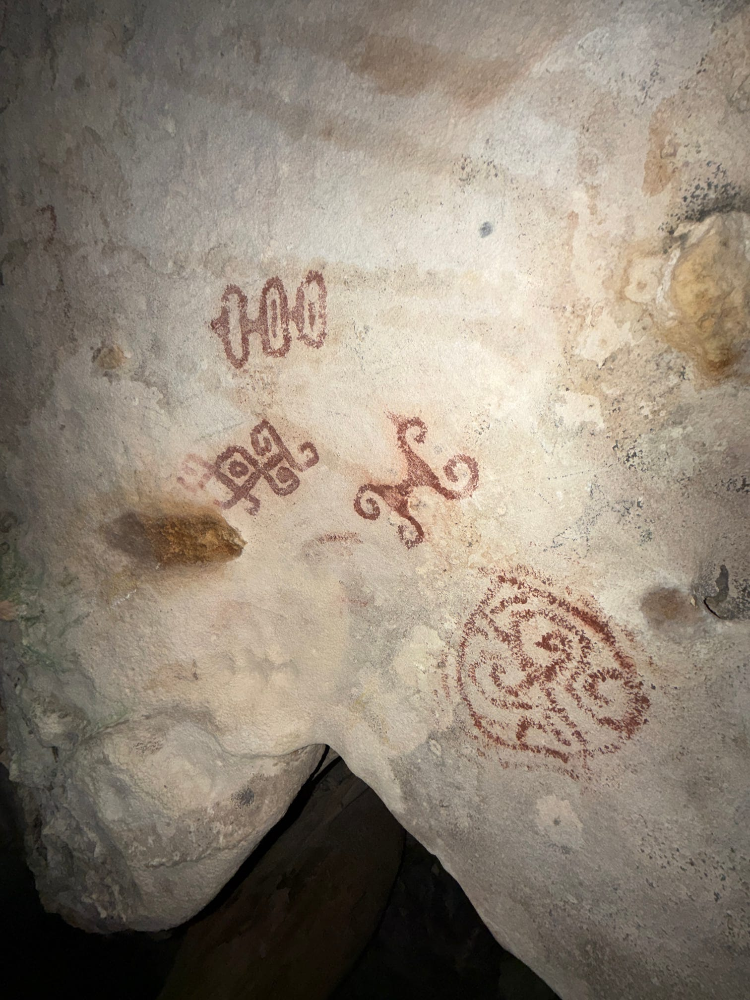
Another couple km and we reached Quadirikiri Cave. This cave featured more indigenous drawings as well as natural lighting from openings in the ceiling.
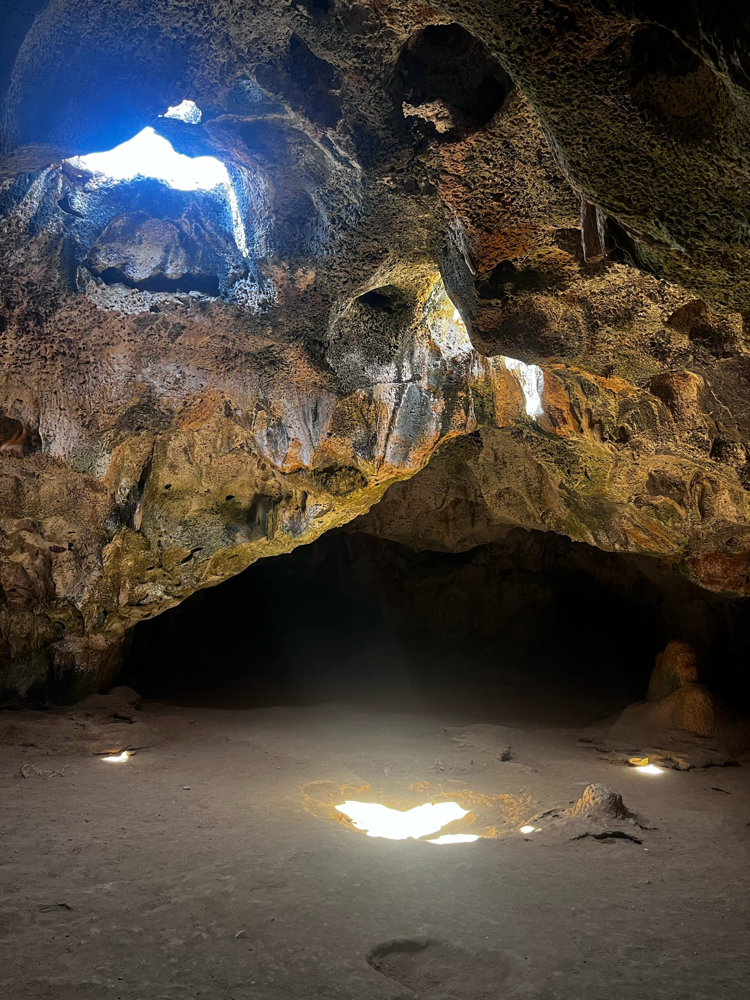
By now, the two vans we used had developed distinct identities: the PlazaMobile and the CheungWagon, named after their respective drivers. I tossed out the name PlazaMobile inspired by my high school beater car known among my friends as the YockeyMobile. Soon after, Finn made a joke regarding the CheungWagon. Both names stuck. The PlazaMobile had been through it the past few days. An interior panel had detached and fell on Willem, and the AC system sounded like it was screaming. On the drive out of Arikok National Park, the PlazaMobile took another hit.
We heard a loud thump followed by scraping. Dr. Plaza immediately stopped, thinking we had blown a tire. When we got out, we discovered the bumper got caught on a pothole in the road. Unfortunately, we had a strong wind, and the styrofoam padding already started to blow away. Dr. Plaza chased after the bumper, startling goats around him as he ran. Students of the CheungWagon saw this and thought that the goats had run off with the bumper. Tired from the hike, our group was dying of laughter. This was just a perfect continuation to the story of equipment failure in our beloved van.
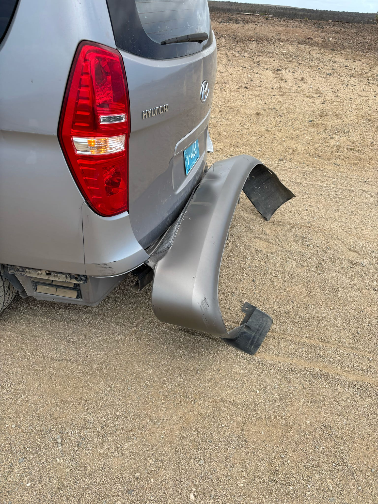
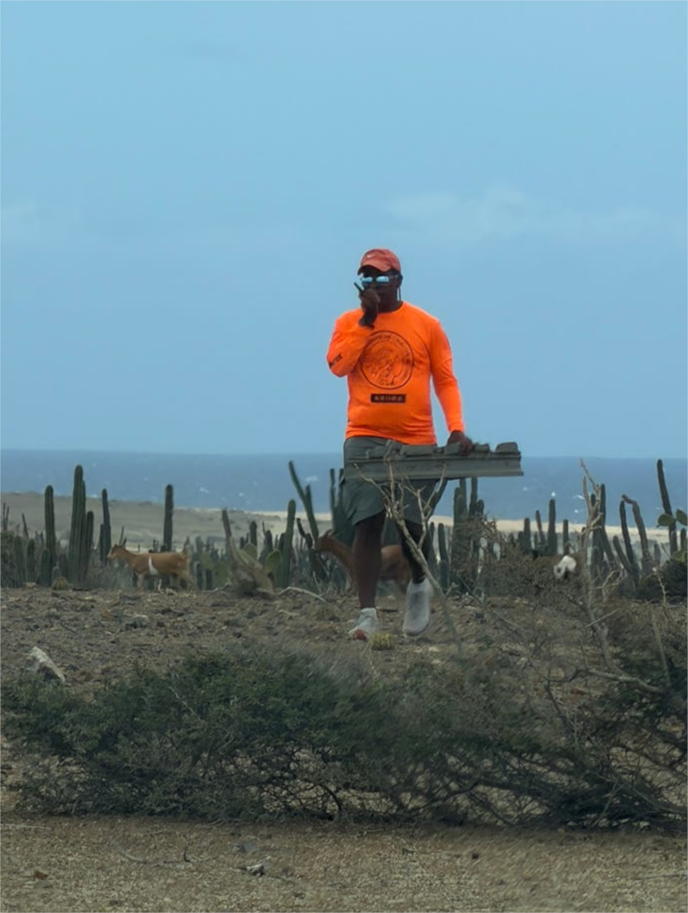
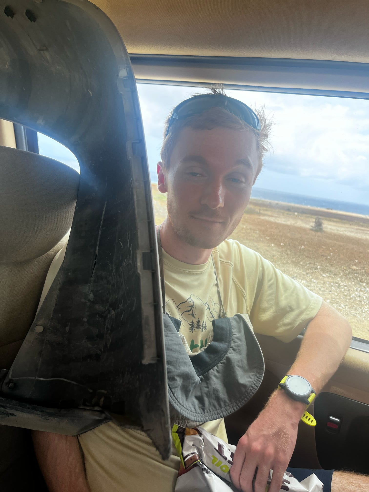
Lunch was Jamaican in San Nicolas, and my vegetable curry with rice & peas shows promise for yet another future college meal.
Dr. Plaza gave a lecture on studying migration through cemeteries. Gravestones can tell lots more information about a society that I would have initially thought: distribution of wealth, religion, mortality rates of both young children and mothers during childbirth, and even the national composition of a population. We toured a Catholic cemetery and directly observed these characteristics as they applied in Aruba.
Inspired by a trip to Bogotá, Columbia with its rich street art scene, Aruban Tito Bolivar launched an initiative in San Nicolas to cover the city with murals. Since most tourist activity was concentrated on the northern half of the island near the resorts, this gives tourists a reason to visit the southern portion of the island. Mr. Bérénos showed us a small selection of the over 200 works of public art across the city. I'm no art critic, so I'll let the pictures do the talking.
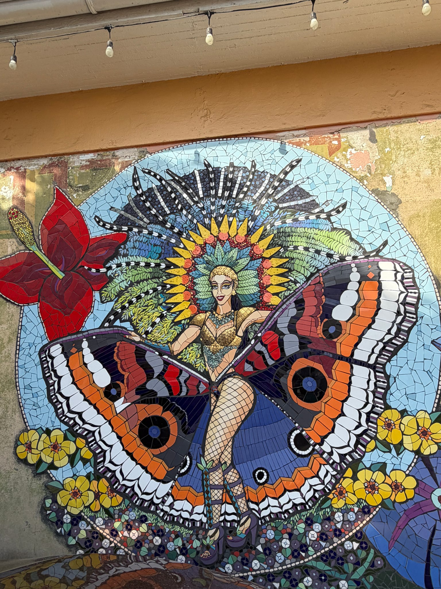
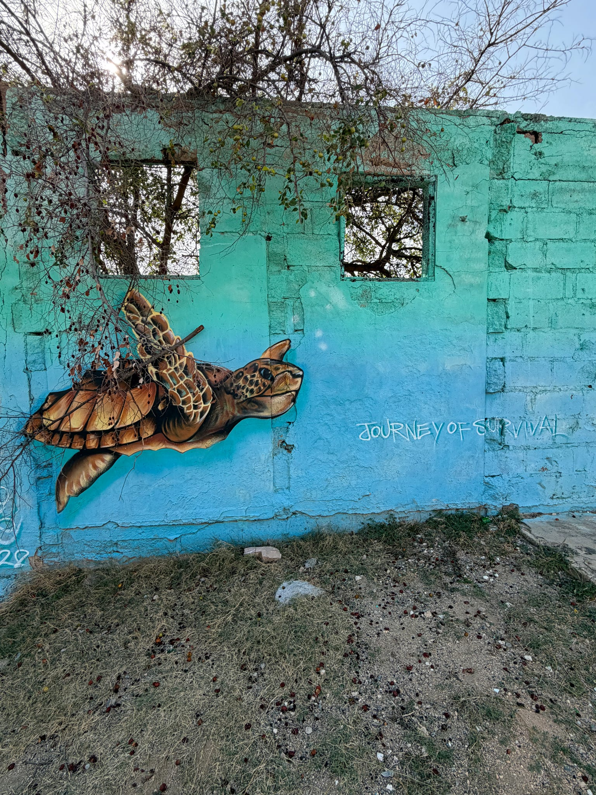
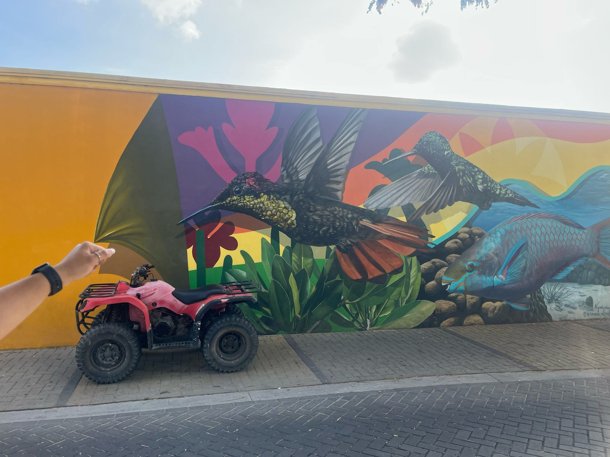
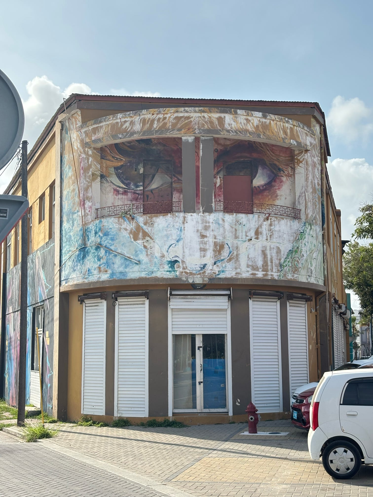
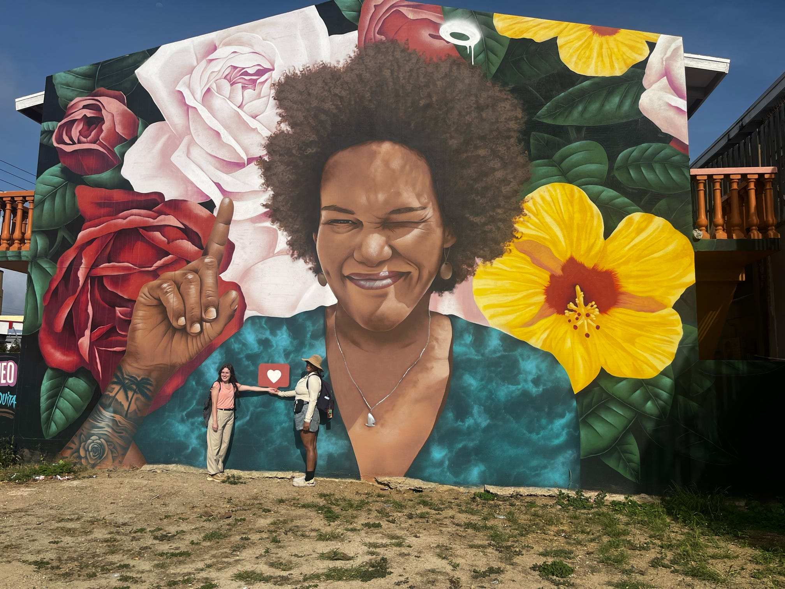
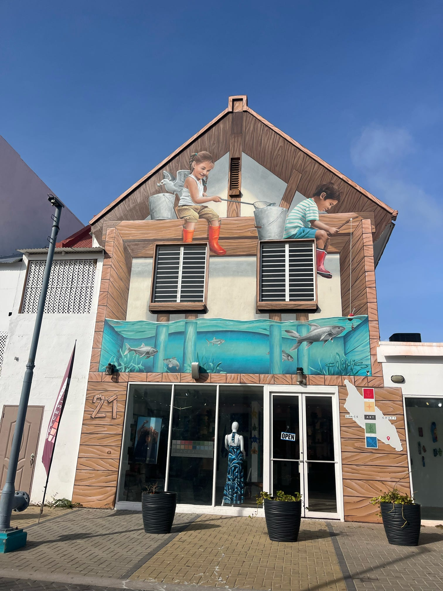
After a quick break at the apartments, we headed to downtown Oranjestad for a local celebration called Ban Bek Caya (Let's go to the Main Street). The celebration appeared dominated by locals, and we as tourists were in the minority, which felt great. Of all the great things we did, this was my highlight of the trip.
After trying to explain electrolyte power in Spanish the previous night, I was in the mentality to have proper conversations. While I was fortunate my high school Spanish classes focused so much on conversation, I hadn't ever had a proper conversation with a stranger. I ripped the band-aid off and stumbled my way through two conversations this night. It kind of sounds silly in retrospect, but this was super fun and motivating for me, having never had this experience before.
I guess a brief explanation of language on Aruba is warranted. The island has four main languages, and locals may even switch between languages mid-conversation. Being a colony of the Netherlands, settlers brought Dutch. English originated on the island when the Lago oil refinery, owned by Standard Oil of New Jersey, began importing laborers who spoke English. English is alive and well due to the large amount of tourism from the US. Spanish is a consequence of the area, brought by immigrant long-term residents from Central and South America and the rest of the Caribbean. Finally, Papiamento is a language created by inhabitants of the Dutch Caribbean islands Aruba, Bonaire, and Curaçao, a combination of Spanish, English, and Dutch.
First, I was looking to go to the restroom. I found a cluster of four porta-potties (two blue, two pink). One of the blues was occupied, so I tried the door on the other, but it wouldn't open. I eyed the pink porta-potties, working it over in my head if I would be allowed to use one. A worker approached me, and in Spanish said that those are for women only. Makes sense. I responded in Spanish that the other door wouldn't open, and she assured me I just had to pull harder. On my way out, I couldn't find paper towels, and again she helped me out. After a friendly parting, I was elated. It wasn't perfect, I'm sure I had mistakes in my grammar and conjugation, but my Spanish education was put to use in the real world. It felt amazing.
Later, I was hungry and looking for food that I could eat, which happened to be in short supply. Tommy and I found a shop selling pastechi, popular in the Dutch Caribbean and similar to Empanadas. The shop owner spoke Papiamento, but I for some reason was confident enough I could place an order in Spanish since the two languages are very similar. Surprisingly, and with some difficulty, I was right! I tried asking which menu items didn't contain carne (Spanish: meat), but he interpreted my question as those without carni (Papiamento: beef). He happily pointed out the galina (Papiamento: chicken) option, but after a further question I realized my mistake. We figured out that I wanted chop soy, and I enjoyed every bite of my hard-earned dinner.
Confidence was getting to me, and it felt good. Tommy and I made our way back to the group. We found most of our crowd watching a live performance from local band The Rincon Boyz. They were on the edge, and a large empty void filled the area in front of the band, apart from Dr. Plaza happily dancing. A couple years ago I took a few dance classes here at OSU, smooth partner styles like ballroom and west coast swing, but very minimal exposure to Latin styles. I could tell John wanted to get out there, so I talked with him and motioned for others to follow us out. I tend to like to know what I'm doing, and in this case I had no clue other than it would be fun.
A dance teacher of mine, Mrs. Lila Reid, told me that the best dancer isn't one who knows the fanciest spins or has the cleanest improv, but instead who keeps a smile through the whole dance, even after making mistakes. I found that true then, it it proved even more true now. I was smiling ear-to-ear, not worried in the slightest about technique or looking like a fool. I just tried my best to move my hips with the rhythm and step in a pattern vaguely resembling salsa. Apparently that energy was contagious, and soon we had most of our group out on the dancefloor.
Everyone was smiling and laughing and yelling and throwing their hands in the air. The singers even got off their stage to get closer and dance with us. The whole experience was magical, and completely changed my views on holding back. I'm often reserved in social settings and try not to look silly in front of others, but I began to realize how much I've missed out on by trying to protect this image of myself.
We danced our way back to the vans, then quickly found our way onto a local Latin radio station with considerable volume. The PlazaMobile erupted in seated dance, and reports from the CheungWagon say that the frame was bouncing up and down. What a night.
Looking back at photos and videos of me dancing, I still get quite self-conscious. I debated even posting the video here for fear of looking silly. Then I read back everything I just wrote about this night. I decided I'd rather embrace looking silly and be happy and share this awesome moment than keep it hidden and be scared of judgement. Boom. That's a mindset I hadn't discovered before this trip.
I must get this response every time my study abroad trip comes up, and it's certainly not an invalid opinion. While the main objective of the trip was learning, and we learned a lot, we still did engage in touristy activities. Having most meals at restaurants was a great way to experience the food of new cultures, but was a constant reminder that we were visitors. We looked beyond just the façade that Aruba presents to visitors and investigated key environmental and social issues, seeing and learning things that the vast majority of tourists don't get a chance to. But at the end of the day, we too were still tourists on the island,,,
I still want a chance to get a proper language immersion experience
{kind=link}
{kind=link}
{kind=link}
{kind=link}
{kind=link}
{kind=link}
{kind=link}
{kind=link}
{kind=link}
{kind=link}
{kind=link}
{kind=link}
{kind=link}
{kind=link}
{kind=link}
{kind=link}
{kind=link}
{kind=link}
{kind=link}
{kind=link}
{kind=link}
{kind=link}
{kind=link}
{kind=link}
{kind=link}
{kind=link}
{kind=link}
{kind=link}